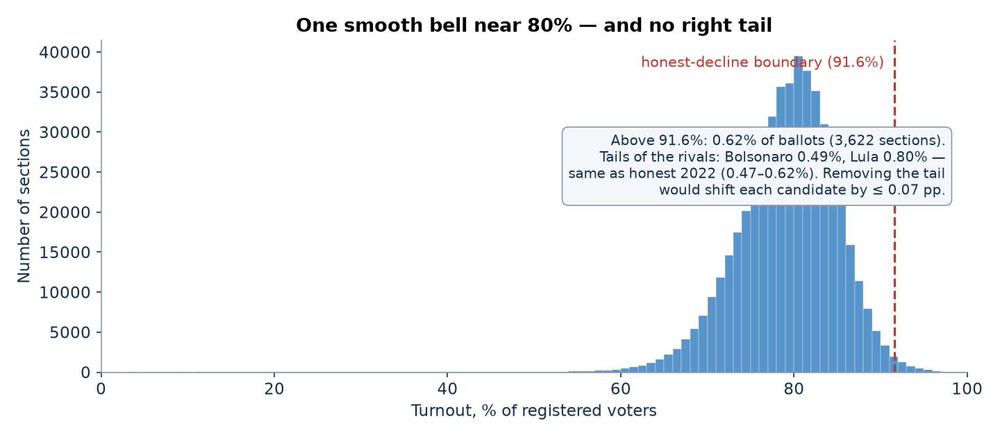
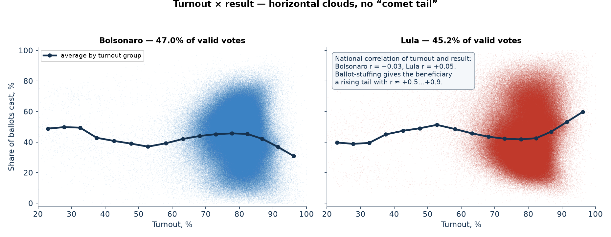
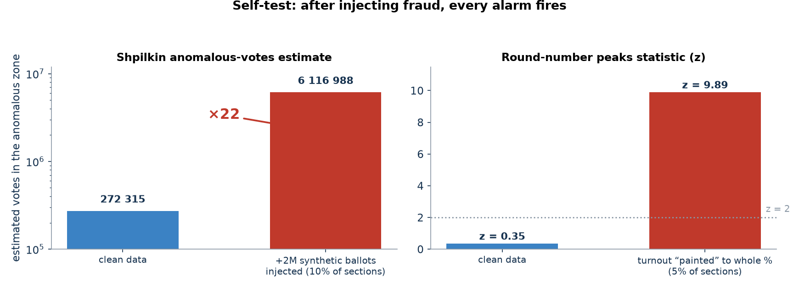
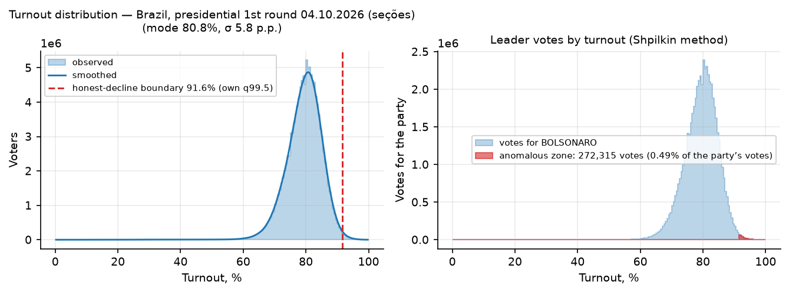
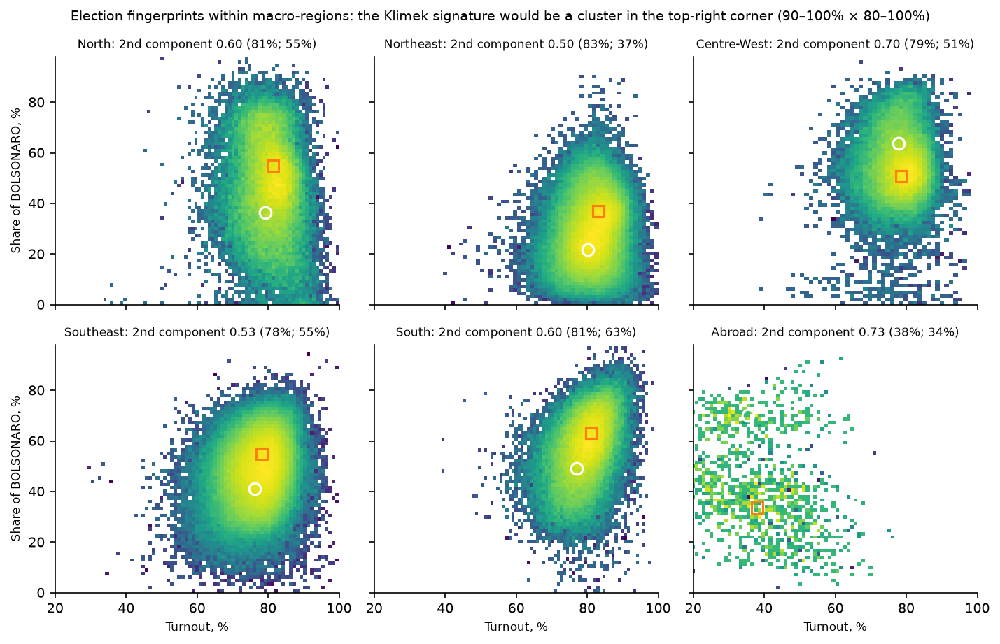
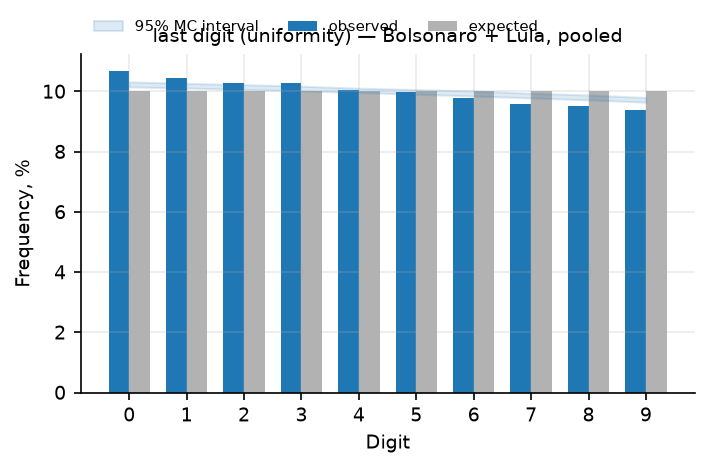
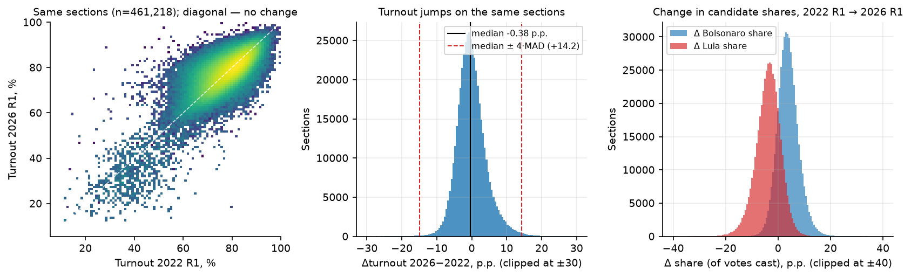
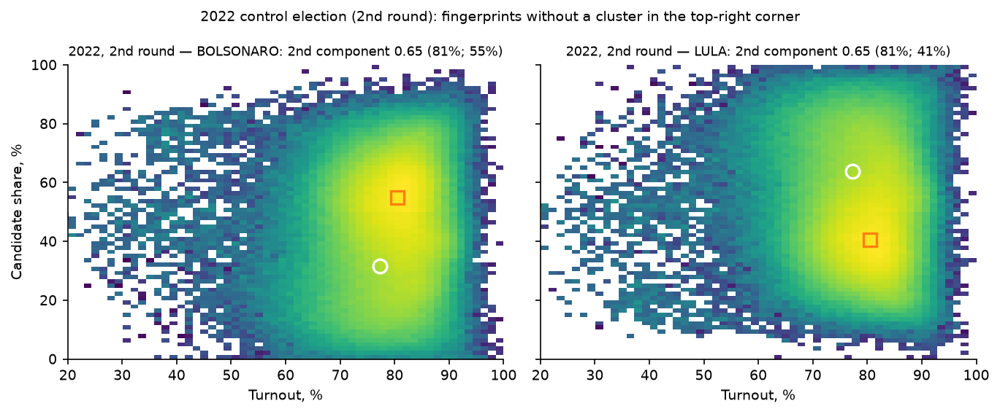
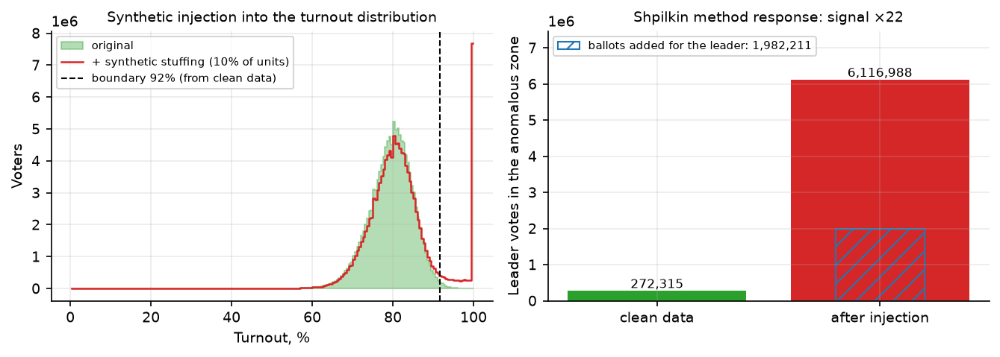

Brazil voted on 4 October. Do the numbers add up?
Verdict: no statistical traces of manipulation
I ran standard election-forensics tests on the official section-level results of the 1st round of the presidential election of 4 October 2026, using the 2022 elections on the very same sections as a control. No test shows the signature of ballot-stuffing or result-painting. (Final TSE results; the runoff of 25 October 2026 is not covered.)
What happened on 4 October 2026
Brazil elected its president. Voting is compulsory and ballots are cast on electronic machines (urnas eletrônicas); the electoral authority TSE publishes final results per section — 499,248 of them, each covering a few hundred voters. Nobody crossed 50%, so the two leaders meet again in a runoff.
Result of the 1st round
Second round — 25 October 2026
Rest of the field
- Cury2.89%
- Ferreira2.24%
- Caiado2.18%
Turnout: 78.92%
- ballots cast125.3M
- registered voters158.7M
- blank + null votes4.8%
Three reasons the numbers can be trusted
The arithmetic is perfect
All 499,248 section records pass every self-consistency check with zero discrepancies: candidate votes + blank + null = ballots cast in each section, no section reports more votes than voters, and the national total matches the official result to the exact vote. Half a million machine-made records, perfectly consistent.
No anomalies where fraud would show
Section turnout is one smooth bell centred at ~81%. Above the 91.6% honest-decline boundary there is only 0.62% of ballots, and the tails of the two rivals are balanced (Bolsonaro 0.49%, Lula 0.80%). Deleting the whole tail would move each candidate by at most 0.07 points. No comet tail, no round-number peaks (|z| ≤ 1.3), no digit patterns, one duplicate pair in half a million sections.
It behaves exactly like the honest 2022 election
The 2022 presidential rounds on the same 461,218 sections serve as a control: the honest-decline boundary derived from them (91.5%) coincides with 2026's own (91.6%), and 2026's tails sit at 2022's own level (0.47–0.62%). Turnout jumps between 2022 and 2026 do not correlate with result swings (r ≈ 0.01), and the two-cluster “fingerprint” existed identically in honest 2022 — it is the Northeast/South geography, not fraud.




How I checked
Eleven families of tests used by election statisticians worldwide, run on the official section data with open-source code. Summary: all clean — and the toolkit demonstrably detects injected fraud.
✓
Anomalous-vote estimate (Shpilkin method)
Votes beyond the honest turnout decline: 0.62% of ballots — at most 0.49% of Bolsonaro's and 0.80% of Lula's votes, and the tail is not tilted toward the leader (Lula's share at high turnout is slightly above his national one). Re-run separately for all five macro-regions plus abroad: no regional tail exceeds 0.85% of a candidate's votes.
Compares the distribution of votes by turnout with an honest-mobilisation bell: above the point where the bell fades (here 91.6%, the 99.5th percentile of the distribution) an injected tail would pile up votes for its beneficiary. The tail beyond the boundary holds 779,412 voters — 0.62% of votes cast: at most 0.49% of Bolsonaro's and 0.80% of Lula's votes, and not tilted toward the leader; deleting it would shift the result by −0.06 pp for Bolsonaro and +0.08 pp for Lula. Re-run inside each of the five macro-regions plus abroad, no regional tail exceeds 0.85% of a candidate's votes.



✓
Turnout × result scatter (“comet tail”)
One horizontal cloud: national correlation −0.03 for the leader, +0.05 for the runner-up. The +0.5…+0.9 gradient that ballot-stuffing produces is absent.
Fraudulent stuffing concentrates extra ballots in already-high-turnout sections, so the beneficiary's share rises with turnout — a rising “comet tail” (r ≈ +0.5…+0.9 in documented cases). Here each candidate forms one horizontal cloud: the national weighted correlation of turnout with share is −0.03 for Bolsonaro and +0.05 for Lula. Any deviation of a real election from r ≈ 0 is mobilisation geography, present symmetrically for both rivals.

✓
Election fingerprints (Klimek et al.)
The statistical mixture splits into two clusters — but both at normal 78–80% turnout: the Northeast vs the South electorate split, mirrored for the two candidates. The fraud signature (a compact cluster at 90–100% turnout and 80–100% share) is absent in all 12 candidate × region runs.
Fits a mixture of two 2D Gaussians to the joint density of turnout and a candidate's share; the Klimek fraud signature is a compact second cluster at 90–100% turnout and 80–100% share. Both components here sit at ordinary turnout (second component: 79.6% / 51.8% for Bolsonaro, 79.3% / 34.2% for Lula; weights 0.64 / 0.64) — the Northeast-vs-South split of the electorate, mirrored between the candidates. In all 12 runs (2 candidates × 5 macro-regions + abroad) no corner cluster appears; honest 2022 produced the same structure.



✓
Round-number peaks (Kobak et al.)
The share of sections with whole-percent turnout matches the size-adjusted random null (z = +0.5); for the leader's share z = −0.03. For comparison, in documented falsification cases z reaches dozens.
Counts how often turnout (or the leader's share) lands exactly on a whole percentage. Humans painting numbers gravitate to round values; for the honest baseline the null is simulated by a Monte Carlo that respects each section's size. Observed: 1.79% of sections with whole-percent turnout vs 1.79% expected (z = +0.5); the leader's share z = −0.03; at multiples of 5 — the stronger prior — |z| ≤ 1.3. Documented falsification cases reach z of dozens.

≠
Benford's second digit
Formally “significant” — but the observed profiles are smooth monotone curves with no spikes on any digit, fully explained by minor candidates' tiny counters (mean under 10 votes per section). Fabricated numbers leave selective spikes; there are none. The test's null simply does not fit this data structure.
Checks the second digit of candidates' vote counts against Benford's law; hand-made numbers deviate on specific digits. Formally the statistic is significant (p < 0.01 even against the empirical Monte Carlo null) — but the observed profiles are smooth monotone curves with no spike on any digit. The null simply does not fit counters this small: minor candidates average under 10 votes per section (their deviations reach 14–15 pp), while for the two leaders the maximum deviation is 2.7 and 2.0 pp. Fabricated numbers leave selective spikes; there are none.

✓
Last digit (Beber–Scacco)
Perfectly uniform over the full set of counts. After the standard ≥100 filter a mild 0.65-point gradient appears — a truncation artifact. The excess of “round” digits 0 and 5 is at most 0.12 points (~370 extra numbers out of 307,000).
In an honest count the last digits of vote counts are uniform; human “rounding habits” would pile up 0s and 5s. Over the full set of counts the distribution is indistinguishable from uniform; the standard ≥100-votes filter leaves a mild 0.65-pp maximum deviation — a truncation artifact of mid-size counters. The excess of “round” 0 and 5 is at most 0.12 pp, about 370 extra numbers out of 307,000 — noise, not a pattern.

✓
2D correlations by state (Kobak et al.)
National r ≈ 0; by state from −0.30 to +0.49, exactly mirrored between the two candidates — mobilisation geography, symmetric, without the “one beneficiary wins at high turnout” signature.
Cross-checks turnout × result correlations nationally and per state. A beneficiary of stuffing shows a distinctly positive correlation; honest geography gives near-zero national values (here r = −0.03 Bolsonaro, +0.05 Lula) and state values driven by mobilisation — from −0.30 to +0.49 for Bolsonaro, exactly mirrored for Lula. Where a candidate mobilises more, his share rises at any turnout level; there is no single beneficiary of high turnout.

✓
Outliers vs neighbours, machine learning, duplicates
0.93% of sections flagged against their own municipality — the normal baseline for heavy-tailed distributions, tiny sections, no clustering; Isolation Forest's 1% is by construction. Exactly 1 duplicate result pair in 499,000 sections.
Three independent screens for “strange” sections. Neighbour outliers: robust z-scores of turnout and leader share inside each municipality flag 4,665 sections (0.93%) — the expected baseline for heavy-tailed data full of tiny sections; the extremes are small sections, with no clustering. Isolation Forest (1% contamination by construction) flags 4,993 sections; its top scores are ordinary mid-turnout sections. Duplicate result vectors (electorate, votes and all candidates identical): exactly one pair in 499,000 sections — coincidence level.


✓
Voting-machine generations (urna models)
The recurring “old machines flip votes” claim: results across UE 2013–2022 machine generations differ by at most 1.8 points; the oldest machines lean to Lula, not to the leader, and are scattered across states rather than concentrated.
Tests the recurring claim that older urna generations “flip” votes: if true, results would shift systematically with the machine model. Across the four generations in service (UE 2013–2022) Bolsonaro's share sits within 1.8 pp of the national result (42.9%–45.1% across sections), while turnout spans 7.8 pp — the machine models differ by where they are deployed, not by how they count. The oldest generation (UE 2013) leans to Lula (Bolsonaro 42.9% vs 44.8% nationally) and is scattered across states rather than concentrated where it would matter.
✓
Control: the same sections in 2022
Boundary 91.5% (2022) ≈ 91.6% (2026); tails at the level of honest 2022; turnout jumps between the elections do not correlate with share swings (r ≈ 0.01, the leader's swing uniform across all ten jump deciles); the two-cluster fingerprint reproduces unchanged from 2022.
Uses the 2022 presidential rounds on the very same sections as a control (461,218 matched sections = 92.4% of 2026 and 93.3% of its voters). The honest-decline boundary derived from the 2022 rounds (91.5%) coincides with 2026's own (91.6%); 2026's tails (0.62% of voters) sit at 2022's own level (0.52–0.59%). Turnout jumps 2022→2026 do not correlate with share swings (r = +0.01 Bolsonaro, −0.01 Lula; the leader's swing is uniform across all ten jump deciles), and the two-cluster fingerprint reproduces unchanged — on an election accepted as clean, this electorate produces exactly the same statistics.



✓
Self-test: the toolkit actually detects fraud
Injecting 2 million synthetic ballots grows the estimated anomalous zone 22-fold; painting turnout to whole percentages in 5% of sections pushes z to 9.9. On these data the methods are sensitive enough to see fraud of this scale — the clean verdict is not a blind spot.
Checks that a “clean” verdict is not a blind spot: synthetic fraud is injected and the toolkit must catch it. Injecting ~2 million ballots (1.98 million for the leader, ≈1.6% of votes cast) into 10% of sections makes the estimated anomalous zone grow 22-fold: 272,315 → 6,116,988 votes. “Painting” turnout to whole percentages in 5% of sections lifts the round-number statistic from z = 0.35 to z = 9.9. On these data, fraud of this scale cannot pass unnoticed.

What this analysis cannot see
Honest limits of the method — statistics shows anomalies, not intentions.
- Counting is electronic: for “protocol” tests (round numbers, digits) the null is a machine, not a person with a calculator. A tampering path at the level of result transmission would leave other traces (ballot-unit ↔ tally reconciliations) that are not part of the open dataset.
- Regional heterogeneity is huge (Lula 60.5% in the Northeast vs 30.1% in the South). The key tests were therefore re-run stratified by macro-region and by state, and outliers were measured against neighbours within the same municipality; residual state-level heterogeneity remains but carries no fraud signature.
- Only the 1st round is analysed. The runoff (Bolsonaro × Lula, 25 October 2026) will be added once TSE publishes its final section-level results.
- The 2022 match covers 92.4% of 2026 sections (93.3% of voters); new or renumbered sections are covered by the national and stratified tests only. Abroad, sections are renumbered between elections, so the jump test is not interpreted there.
- Section-level forensics cannot see manipulation above the section level (e.g. rewriting during aggregation); such checks require ballot-unit ↔ totalizer files that are not published in the open dataset.
- I am an independent researcher with no ties to the electoral authority or any campaign; all inputs are official TSE publications and the analysis code is open source.
Data & reproducibility
- Source: official section-level (seção) results from the TSE open-data portal (resultados-2026), final 1st-round files generated 5–6 October 2026: 499,248 sections including abroad voting — about 23 GB of CSV.
- Self-consistency: zero discrepancies in all checks (nominal votes vs detail files, blank/null cross-checks, no duplicated section keys, no turnout above electorate); the national total matches the official result to the exact vote. Control dataset: TSE resultados-2022, both rounds, matched to the same sections (92.4% coverage).
- Toolkit: open-source election-forensics pipeline (Python, pandas / scikit-learn) implementing Shpilkin, Klimek, Kobak, Beber–Scacco, neighbour-outlier and Isolation-Forest methods, urna-model stratification, the 2022 control and synthetic self-tests.
- Full technical report (in Russian), the section dataset, scripts and all 18 figures / 21 tables are available in the project repository.